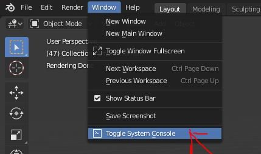
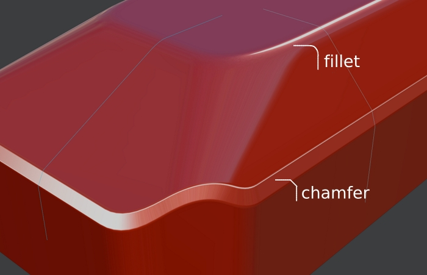
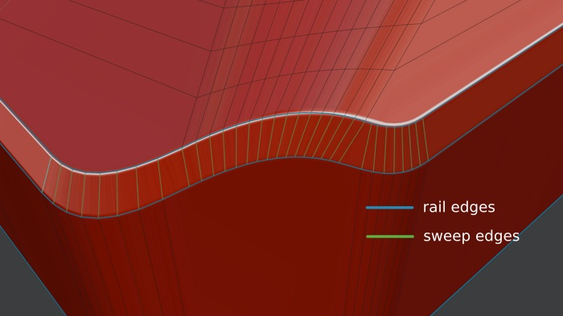
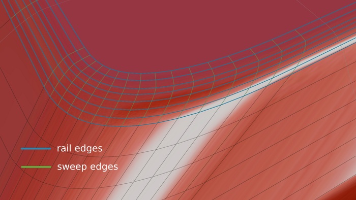
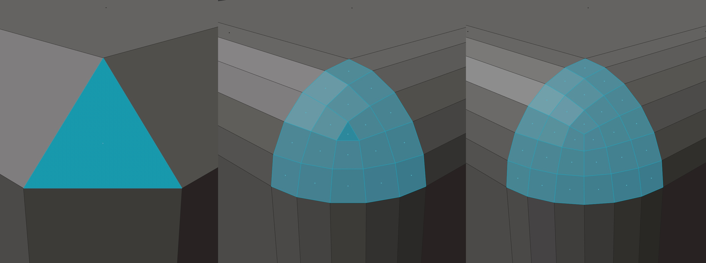
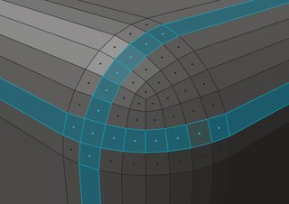
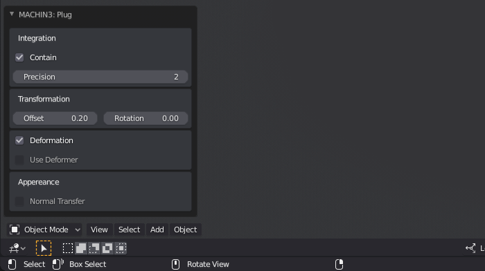
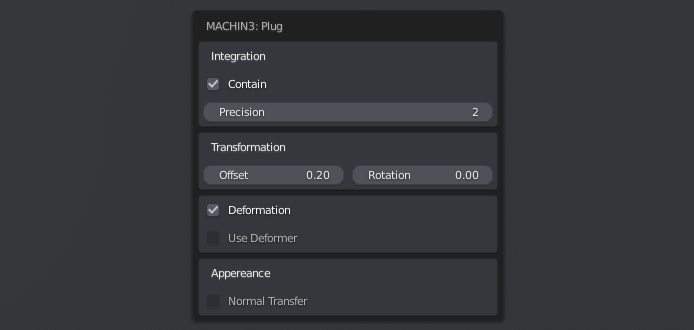

Contents
Installation
How is it done?
See the Installation guide and note the version requirement.
Will MESHmachine work in Blender 4.0-alpha (some experimental build)?
Using experimental builds of Blender, you are at risk of encountering sudden failures of addons that used to work just fine the day before.
I can't make any guarantees if things will keep working. Fixing things that break in experimental Blender builds will not be a priority, until the experimental build approaches release.
Get support
Attention
Note the Requirements in the installation guide.
Make sure you are using the latest version.
Confirm you've followed the installation instructions.
Also note, that experimental features are excluded from product support!
General information
To provide help, I need the following:
- Proof of Purchase
- system-info.txt
Please use the Get Support tool in the help panel to create the system-info.txt file, and for further instructions.
Errors
If you are seeing an error, please send me a screenshot of the system console.
Just an screenshot of the error message popup usually lacks context and is not ideal.
Instead of sending a screenshot, you can also copy and paste the console text into the email.
Keep in mind

On Windows you can turn on the console via Window > Toggle System Console.
On Linux and MacOS, you need start Blender from a terminal.
I do not need an image of Blender's Info View and I don't need to see Blender's Python Console either.
If the error only occurs on a certain model, please attach the blend file as well.
Please remove any part of the model that doesn't contrinbute to the problem to keep the file size small.
Tool misbehaviors
If you think a tool of MESHmachine doesn't do what it should do, please send me the blend file.
Please remove any part of the model that doesn't contribute to the problem to keep the file size small.
Contact
Use eMail, not twitter, not facebook, not youtube, not artstation, not blender market, and not the Blender Artists or polycount threads for reporting of errors.
Other Addons
Are DECALmachine and MACHIN3tools required?
No, MESHmachine provides modeling tools that work on the mesh level. It does not depend on any other addon to do so.
MESHmachine is a mesh modeling toolset, while DECALmachine is a detailing toolset, using mesh decals.
MACHIN3tools is a free addon collection, covering a variety of tasks simple, common blender task, including but not exclusively related to modeling.
Is HardOps or BoxCutter required?
HardOps and BoxCutter are not required to use MESHmachine.
They can complement each other well however, and I personally do use both of them.
Terminology
What is a chamfer? What is a fillet? What is a bevel?
A chamfer is a transitional surface between 2 other surfaces, often - but not necessiarily - at a 45 degree angle. It's also referred to as a flat bevel.
In blender it can be created using the Bevel tool and modifier, if the segments are set to 1 and with the Bridge tool if the number of cuts is set to 0.
A chamfer has a flat profile.
Similarly, a fillet is a transitional surface, with a curved profile. It's also referred to as a rounded bevel.
In blender it can be created using the Bevel tool and modifier, if the segments are set to higher than 1 and with the Bridge tool if the number of cuts is set to above 0.
A fillet has a round profile.
Both are used to refine and replace hard edges.
 this chamfer has 2 micro bevels of its own!
And so in the context of MESHmachine, I think it makes sense to differentiate between fillet and bevel.
Bevel is a tool to create a fillet from a hard edge. And with MESHmachine's fuse tool, you can now also create a fillet from a chamfer.
The chamfer itself, can of course also be created by the bevel tool or by using MESHmachine's Chamfer tool, although the latter is specifically made for post-boolean chamfers.
What are rail and sweep edges?
Rail edges are edges or edgeloops going along a bevel or chamfer. Sweep edges are edges going across.
 chamfers have only 2 sets of rails
 while bevels can have many rails
Rail edges are great to loop select across a chamfer or bevel, while sweep edges can be used to loop select along a chamfer or bevel.
Loop Selections
Loop selections are done - by default via Alt + Select Mouse, while pointing at an edge.
What are triangular and quad bevel corners?
A triangular bevel corner is one, that has three corner vertices.
Similarly a quad corner is one, that has four corner verts.
 a triangular bevel corner can be a single triangle, can include a single triangle in its center or may not contain a triangle at all
Triangular Bevel Corners
Triangular bevel corners split the flow of a bevel/fillet in 2 directions.
This is undesired and tools like Unfuse, Refuse and Unbevel, will not work with these kinds of corners.

The Quad Corner tool can be used to convert triangular bevel corners to quad corners.
Is this non-destructive modeling?
It's not non-destructive, no.
With MESHmachine you work directly on the mesh level. There's no continuous construction history as in CAD modeling tools, and there aren't stacks of modifiers either. Mesh manipulation is permanent.
What MESHmachine's chamfer and fillet toolset does, is reconstruct geometry, which is imperfect, but often good enough.
And so, I'd call it pseudo-non-destructive, or better reconstructive.
Using MESHmachine
Where can I discuss the MESHmachine workflow?
I'd invite you to discuss all things MESHmachine (except errors and tool misbehaviors) in the blenderartists thread.
Can I use this with subdivision surfaces? Are plugs compatible with sub-d's?
Subdivision Surface modeling is generally understood as working on a low to mid poly model, and adding a live sub-d modfier on top, which produces a higher density, smoother mesh. While I think some of MESHmachine's tools can be helpful in this context, it's not really aimed at that.
You will likely have to manually remove ngons and avoid triangles due to the tight topology constraints of the sub-d workflow.
For me personally, sub-d's only play a role, if a sculptural surfacing is an important part of the form language. And in that case I will use it to generate the main forms, but then fatten the modifier stack.
In that scenario you can then abolutely use plugs on top of the mesh, but you loose the flexibily of sub-d modeling.
What you can't do is use plugs on the low or mid poly model while keeping the sub-d modifier live. This is asking for trouble.
So, if you use sub-d's as a finishing tool, MESHmachine is not your best choice. If you only use it for form generation initialy and are willing to apply the subsurf modifier, MESHmachine can be useful.
Why is the ... tool greyed out in the MESHmachine menu?
Every time you open the MESHmachine menu, each tool listed will check if certain conditions are met, before becoming available, a process called polling. This is to avoid having to deal with illegal selections a tool can't properly process.
Refer to the individual tool pages here in the docs, for details on what tool expects what kind of selection.
Note
These conditions are intentionally very simple and just because, a tool is no longer greyed out does not mean it will execute properly.
Illegal selections may still be present and you will receive feedback, if that's the case.
How can I get the Plug popup? How can I adjust a tool's properties afterwards?
In Blender the result of most tools, can be adjusted, after a tool has been called.
In case of MESHmachine's Plug tool for instance, you can set various properties to modify the way the plug geometry is integrated into a surface.
There are 3 ways to do this:
1. Panel
 the operator properties panel at the bottom left of the screen
2. Menu
 the Adjust Last Operation entry in the Edit Menu
the Adjust Last Operation entry in the Edit Menu
3. Popup
 Redo Last popup called via a shortcut
 the default keymap is
the default keymap is F9 or F6 depending on your chosen keymap
If you like using the popup, consider mapping it to a button on your mouse, which is how I do it in all feature videos.